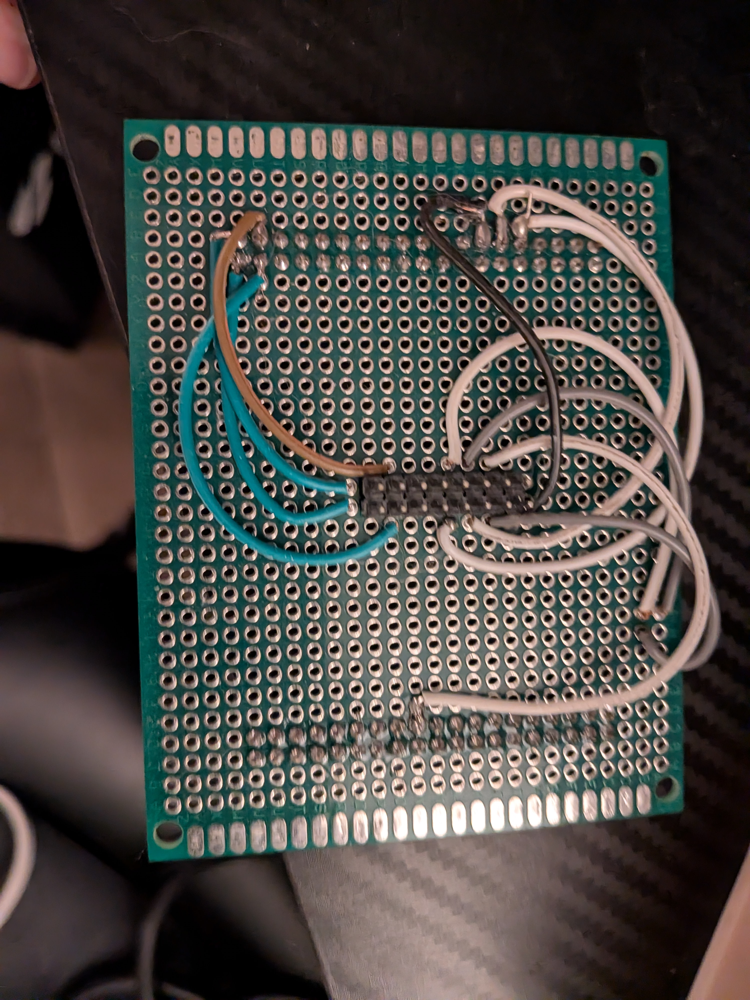
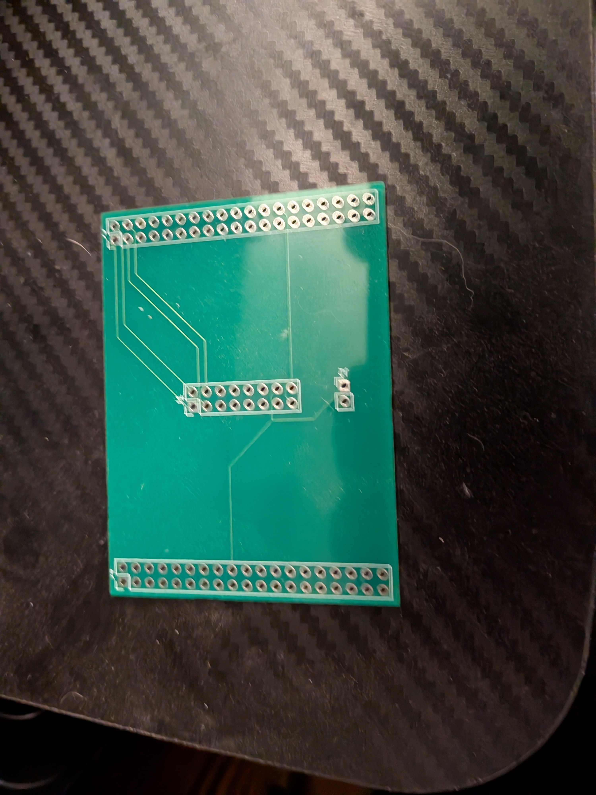
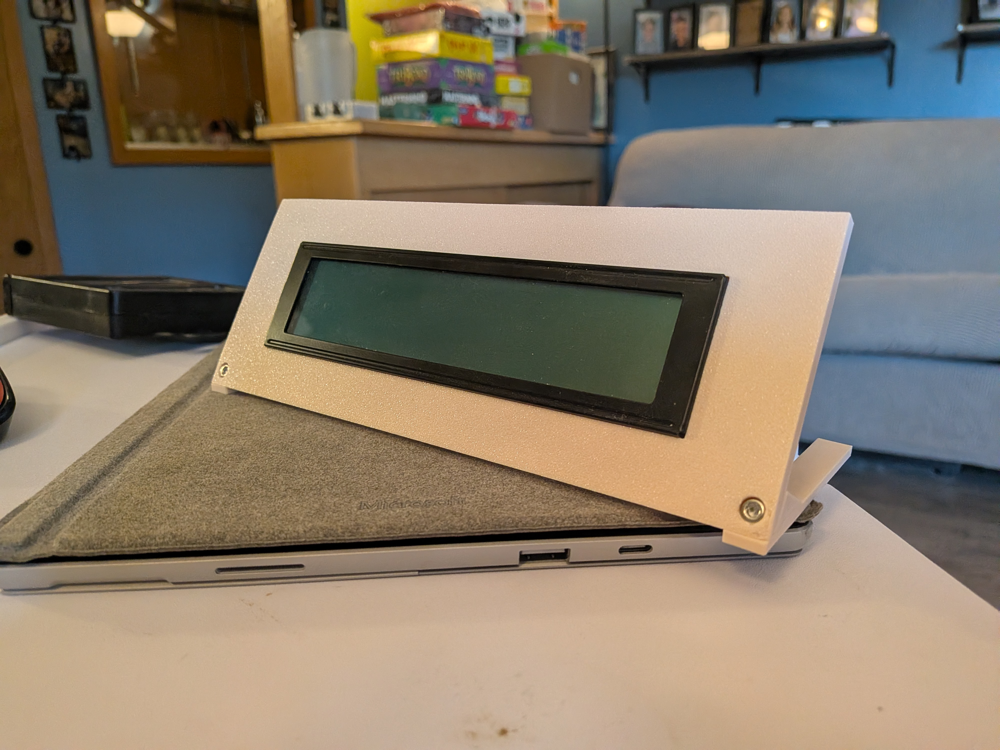
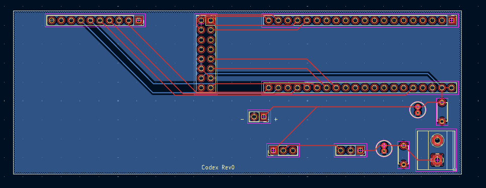
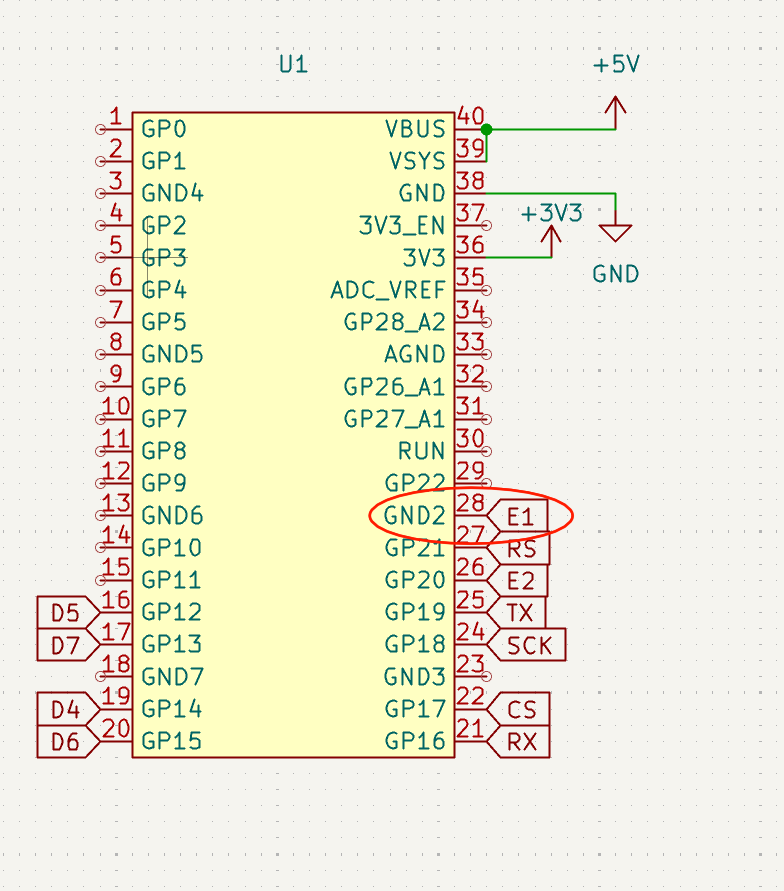
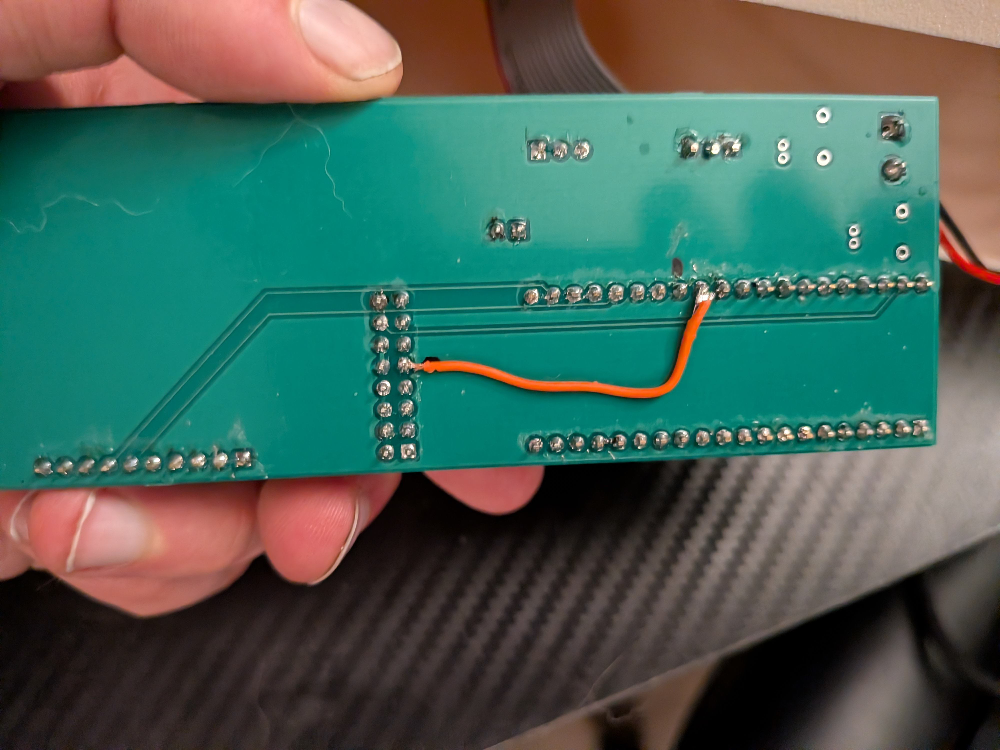
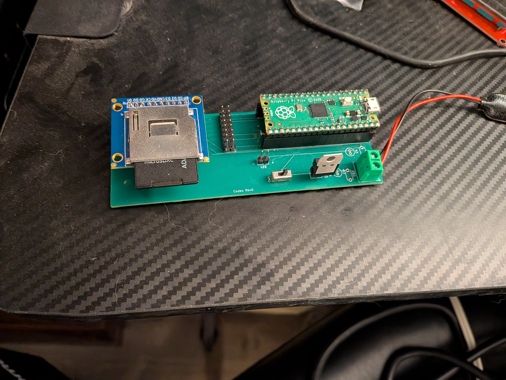
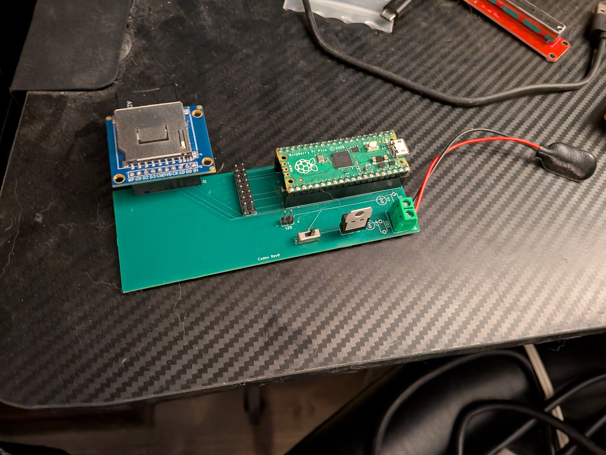
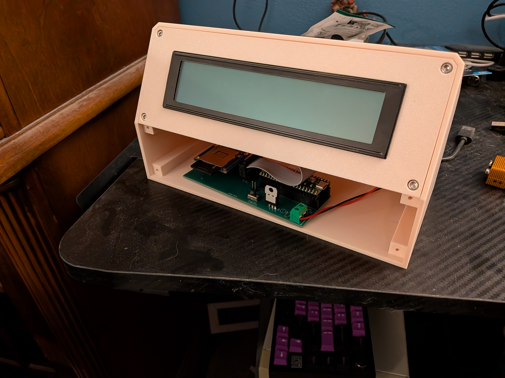
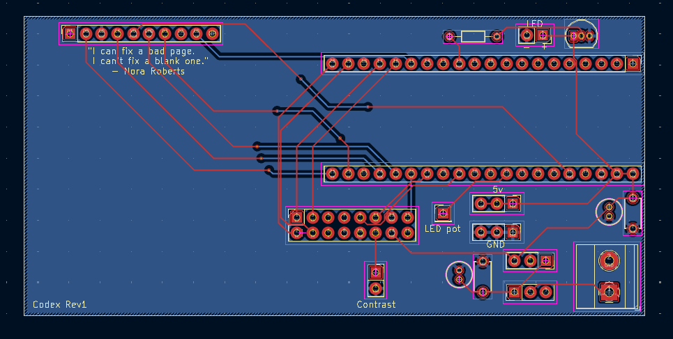

Like most things I end up deciding to build, this started as an answer in search of a problem. I thought about maybe taking up a new hobby in the form of writing, and I wanted to have a dedicated device for it. There are already a selection of distraction-free writing devices on the market, so I didn't really need to build another one. However, the most popular ones — the FreeWrite, BYOK, and even the AlphaSmart Neo that this project is based on — are too expensive, closed source, or out of production respectively, and even the AlphaSmart is becoming increasingly more expensive.
Unlike some of my other projects where I just chose a tech stack and run with it, I actually spent a decent amount of time on hardware selection. I wanted to keep the price point relatively low, I also wanted to select something that was relatively easy to work with so that users could modify the design if they wanted to.
I knew that I had wanted the following features:
The design basically started with selecting a display. I had considered going the E-Paper route, like the FreeWrite, but I ultimately decided against it just due to how annoying I find E-Paper displays to work with. I also tried looking at dot-matrix LCDs, but I couldn't find one of a suitable size that would display enough text to be useful for writing. I ended up settling on a 40x4 character LCD, which is readily available from several manufacturers and happens to match the default configuration of the AlphaSmart Neo.
I had considered going with a single board computer like a Raspberry Pi Zero, but I ultimately decided against it just due to the increased power consumption and boot time. I wanted something that could turn on and be ready to write on in a matter of seconds. I also didn't want to deal with operating systems and they have the potential for not being "distraction-free."
Originally, I had thought maybe I would just use an ATMega328P for the following reasons:
After ruling out the ATMega328P, I took at look at the STM32F4 series of microcontrollers. The advantages here were:


You'll note that the PCB is not populated. I gave up on the STM32 design before I even received the boards. So this is basically just a relic of a failed design.
For about one second, I considered an ESP32, since there is a similar project already out there that uses an ESP32: the LibreSmart DeNada. However, I didn't have an ESP32 board lying around. And that was pretty much the only reason I ruled it out.
Finally, I settled on the Raspberry Pi Pico. This is a microcontroller board based on the RP2040 chip. This ended up being a solid choice for a few reasons:
Unfortunately, I don't have any pictures of the breadboard prototype. It was essentially just the LCD and SD card modules connected to the Pico with jumper wires. The contrast pin on the LCD was just wired directly to ground, which just ties the contrast to max. I was able to verify that the LCD and SD card were both functional with this setup, but programming it and trying to move it around was a pain.
A mistake I made with this prototype was that originally I had powered it via a benchtop power supply, which was fine, but my supply is a cheap one off Amazon, and I didn't realize that the voltage spiked when turning it on. This ended up frying the first Pico I was using for the prototype. After that lesson, I installed a 5v linear regulator in-line with the power supply to prevent that from happening again (and largely switched to using a 9v battery for power since it was more portable that way).
Unlike my other projects, I decided to go with C++ instead of C for this project. This was mostly so I could make use of some C++ data structures like std::string and std::vector for the gap buffer. Additionally, the library I adapted for the LCD was written in C++, so it seemed like it would be easier to integrate it if I just wrote the firmware in C++ as well.
The adaptation of the LCD library was pretty straightforward. I basically just wrote wrapper methods for all the Arduino calls that the library made, and just had them do the equivalent call in the pico SDK, which made it so none of the core logic of the library had to be changed at all. I ended up posting the fork of this on my GitHub for others to use if they so wish. I do think I'll probably end up going through and just porting the code directly rather than using wrappers, but this was a quick and easy way to get it working for the prototype.
The trickiest part of the firmware for this project ended up being the gap buffer implementation. The gap buffer itself was not that complicated, a vector of chars and then shifting the chars around as you navigate left and right was extremely easy. To skip words and whatnot, it's just repeat that process until you hit a whitespace character. I had that portion of it done before I even assembled the breadboard. The tricky part was the navigation in conjunction with the LCD.
Originally, I had thought it would be easy. Each row in the LCD is 40 characters, so just move left or right 40 characters in the gap buffer, right? Wrong. If there's a newline before the end of the row in the LCD, that row doesn't occupy 40 characters, so just shifting left or right 40 characters would not put you in the right spot.
The way I ended up getting around this problem is to maintain a "framebuffer" within the gap buffer that contains the currently viewable content. This frambuffer is a 2D array that matches the dimensions of the LCD. So now when you move up or down, the buffer checks if you landed on an actual character (the line you're currently on is the same length or shorter than the one you navigated to), or a null character (the line you're on is longer than the one you navigated to), then it calculates how many characters you'd need to shift in the gap buffer to get to that point.
The next tricky part was shifting the display up or down when you reach the boundaries of it. Basically, the gap buffer just keeps track of the starting index of of the framebuffer within the gap buffer. Although this was tricky, it actually ended up being less complicated than the movement within the frame buffer. When you move past a boundary you basically just scan forward or backward in the gap buffer until you hit 40 characters or a newline, whichever comes first. Then you just update the starting index of the framebuffer to add or subtract that amount. There are some extra edge cases like checking if you hit the end or beginning of the buffer, but that's the general idea.
Finally, all of this was extremely annoying to test on-system. So I ended up designing a virtual test program in JavaFX that simulates the LCD so I could test out my gap buffer implementation without having to flash the firmware and connect everything up to the LCD. This ended up being a huge time saver, and I was able to iterate on the firmware much faster than I would have been able to if I had to flash it every time I wanted to test a change. I'll probably end up posting the source for this on my GitHub as well just in case it helps someone else out, or if someone is just curious.
Since this was a breadboard prototype, I didn't design a full enclosure for the board. However, I did design and 3D print a stand for the LCD to sit in so that I could have it propped up while I was testing the firmware. This was basically just a bezel with a kickstand.


The rev0 PCB was essentially just the breadboard design put to an actual PCB to avoid the mess of jumper wires. I did end up re-routing some of the pins from the LCD to the Pico's GPIOs, but the overall design is pretty much the same as the breadboard prototype. It utilizes socketed components for the microcontroller and SD card slot, so that I can still re-use those for other things. The PCB also included screw terminals for power input, so I can attach either a battery or a power supply for testing. I ended up using a 9v battery for most of the testing since they're easy to connect and provide more than enough voltage for the linear regulator to work with.
I did, however, make a mistake when re-routing the pins, and routed one of the enable pins on the LCD directly to ground on the Pico. Thankfully, this was easily fixed by cutting the trance and adding a bodge wire. Always be sure to triple (or even quadruple) check your schematic before sending them off for fabrication! It also helps to not label your pins in a dumb way like me. I made the symbol myself since I couldn't find one I liked, and decided to follow a diagram online that labeled each GND individually (GND1, GND2, etc.). So when I was wiring up the PCB, I just looked at the number, saw the label began with "G" and assumed it was a GPIO. Definitely going to just label all of them GND for the next schematic.


Another mistake I made was that I placed the SD card's socket on the PCB rotated 180 degrees from what I intended. Luckily, all I needed to do to fix this was to just rotate the module itself 180 degrees as well.


Also, if you look carefully at the above images, you can also see that there are a couple of components not populated on the board. Those are just decoupling capacitors, and they're only not populated because I'm lazy and didn't feel like soldering them on. I really should just to verify that the design is correct. But the breadboard didn't have them, so I figured it would be fine without them. I'm not entirely sure why I bothered putting them on the PCB if I wasn't going to populate them, but here we are.
The firmware at this portion of the project was pretty much a direct port of the breadboard prototype firmware. The only real changes made were the pin assignments for the data lines on the LCD. I also have begun cleaning up the code and moving things into separate files and classes. One thing I'm still working on is developing a better structure for handling the filesystem. As it currently stands, if the SD card isn't inserted when the device is powered on, it won't ever mount it afterwards. I also still need to implement some of the more complex text navigation and shortcuts, but the basic movement and text editing functionality is all there.
I also need to figure out a firmware update strategy that doesn't involve opening the case up and plugging in a USB cable to the Pico while holding the BOOTSEL button. My current plan is to have a USB port on the outside of the case that you can plug a USB cable into, and have a push button that you hold down while plugging in the USB cable that the firmware would detect and enter update mode (it would basically just do the same thing as BOOTSEL).
For this revision, I did begin the mechanical design of the enclosure, even though the PCB is not in its final form factor. I mostly did this because I wanted to get a feel for how the dimensions of the device would work in practice. It doesn't have any of the internal mounting points, or any I/O cutouts. I do believe that I'll end up shrinking down the final enclosure from this, but not by much. The bezel unfortunately can't get much smaller just due to the size of the LCD's PCB. I think I can shave about 10mm off each side, but that would make it so I can't mount the bezel from the front. So if I do decide that I want to make the enclosure smaller, I'll have to figure out a different mounting solution.


Originally, I wasn't sure whether to consider this Rev0.1 or Rev1. I ended up settling on Rev1 primarily because there were enough changes that it felt like a truly new revision, and a Rev0.1 felt like it should more have been just fixing mistakes on the original board. This also shows a much clearer progression in the design (at least in my opinion). Ultimately it doesn't matter that much, since either way it's a different board than the original prototype.
I have designed and sent in the Rev1 PCB for fabrication. The primary changes in this revision are fixing the mistakes on the Rev0 PCB, such as flipping the SD card footprint, and routing the LCD enable to an actual GPIO pin. Some new additions include a transistor for PWM control of the power to the LCD backlight, breaking out the contrast pin on the LCD so that it can be adjusted with a potentiometer, and wiring up the "card detect" pin from the SD card so that the firmware can more robustly detect when an SD card is inserted or removed (I "backported" this as a bodge wire on the Rev0 PCB).
The Rev2 PCB will be the "final" design, in the sense that it will include all of the components for power management and battery charging and it will attempt to be in the final form factor. However, the components used on this are likely to still be through-hole for ease of assembly.
The Rev3 PCB will be the actual final design, in that it will have the final packages for all of the components, and will likely be designed to be assembled by a manufacturer (aside from the Pico itself). Both the Rev2 and Rev3 PCBs will have the same functionality, but the Rev2 will be more for hobbyists who want to build their own, and the Rev3 will be more for people who just want to buy a finished product.